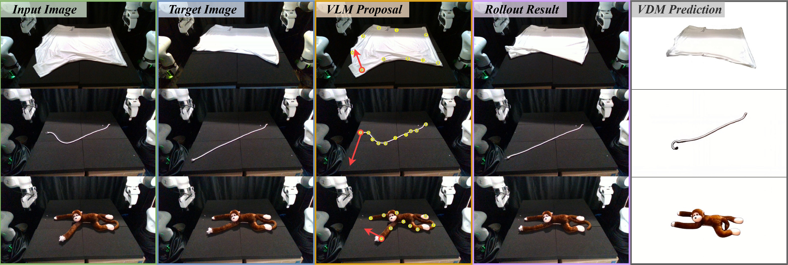
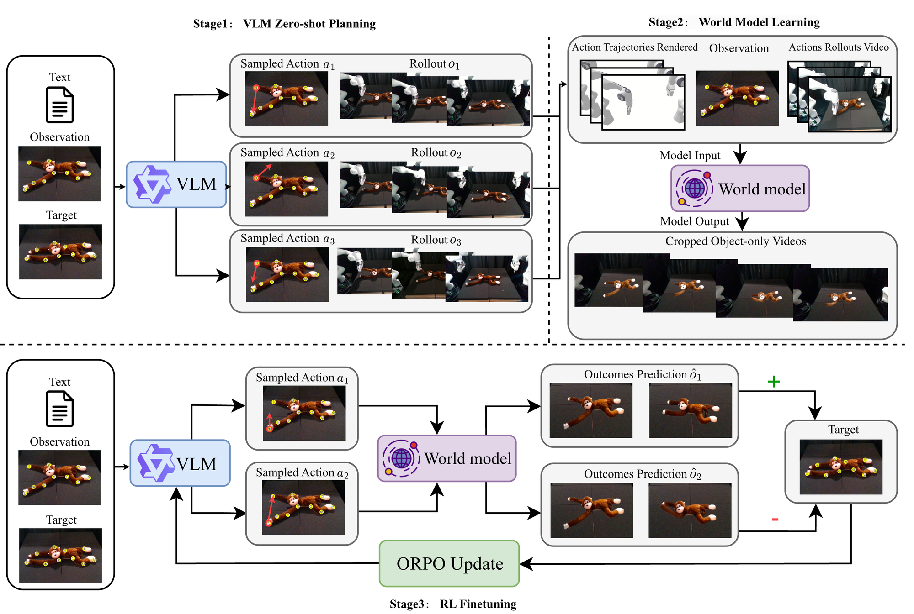
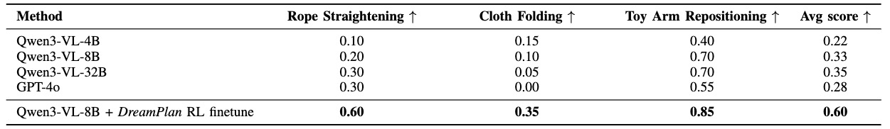

*Equal contribution
Robotic manipulation requires sophisticated commonsense reasoning, a capability naturally possessed by large-scale Vision-Language Models (VLMs). While VLMs show promise as zero-shot planners, their lack of grounded physical understanding often leads to compounding errors and low success rates when deployed in complex real-world environments, particularly for challenging tasks like deformable object manipulation. Although Reinforcement Learning (RL) can adapt these planners to specific task dynamics, directly fine-tuning VLMs via real-world interaction is prohibitively expensive, unsafe, and sample-inefficient. To overcome this bottleneck, we introduce DreamPlan, a novel framework for the reinforcement fine-tuning of VLM planners via video world models. Instead of relying on costly physical rollouts, DreamPlan first leverages the zero-shot VLM to collect exploratory interaction data. We demonstrate that this sub-optimal data is sufficient to train an action-conditioned video generation model, which implicitly captures complex real-world physics. Subsequently, the VLM planner is fine-tuned entirely within the ``imagination" of this video world model using Odds Ratio Policy Optimization (ORPO). By utilizing these virtual rollouts, physical and task-specific knowledge is efficiently injected into the VLM. Our results indicate that DreamPlan bridges the gap between semantic reasoning and physical grounding, significantly improving manipulation success rates without the need for large-scale real-world data collection.

Stage 1: Zero-shot proposal. Given the current observation and goal image, a pretrained VLM planner generates multiple candidate keypoint-based manipulation actions.
Stage 2: World model learning. These zero-shot actions are executed to collect diverse action–observation trajectories, which are used to fine-tune an action-conditioned diffusion world model that predicts object deformation outcomes from rendered robot-motion videos.
Stage 3: World-model-guided alignment. The trained world model acts as a verifier to evaluate sampled VLM actions by predicting their future outcomes; comparing predicted outcomes yields pairwise preferences (more vs. less goal-consistent actions), which are used to fine-tune the VLM planner via Odds Ratio Policy Optimization (ORPO), aligning it toward physics-consistent behaviors without additional real-world interaction.

Through DreamPlan RL fine-tuning, Qwen3-VL-8B achieves state-of-the-art (SOTA) performance in complex object manipulation, consistently outperforming leading pure zero-shot baselines.
TBD